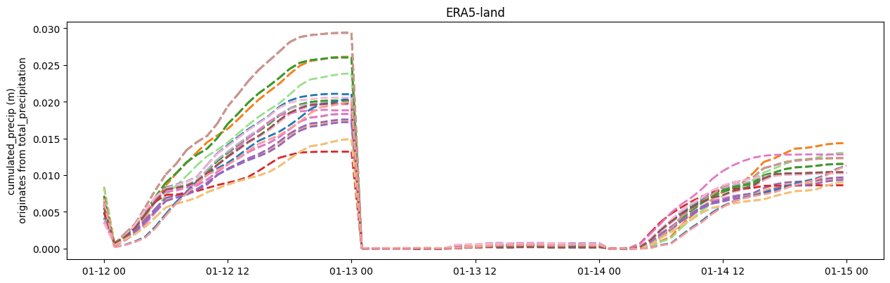
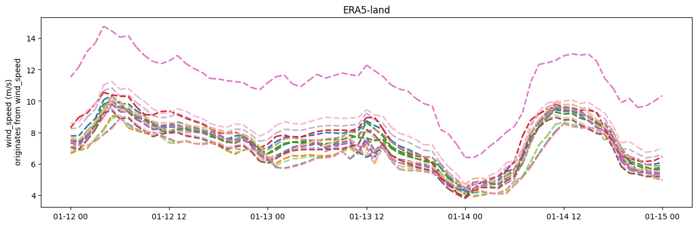

Working with specific observation types#
In this demo, you can find a demonstration on how to use Observation types.
[1]:
import metobs_toolkit
#Initialize an empty Dataset
your_dataset = metobs_toolkit.Dataset()
Default observation types#
An observation record must always be linked to an observation type which is specified by the Obstype class. An Obstype represents one observation type (i.g. temperature), and it handles unit conversions and string representations of an observation type.
By default a set of standard observationtypes are stored in a Dataset:
[2]:
your_dataset.show()
-------- General ---------
Empty instance of a Dataset.
-------- Observation types ---------
temp observation with:
* standard unit: Celsius
* data column as None in None
* known units and aliases: {'Celsius': ['celsius', '°C', '°c', 'celcius', 'Celcius'], 'Kelvin': ['K', 'kelvin'], 'Farenheit': ['farenheit']}
* description: 2m - temperature
* conversions to known units: {'Kelvin': ['x - 273.15'], 'Farenheit': ['x-32.0', 'x/1.8']}
* originates from data column: None with None as native unit.
humidity observation with:
* standard unit: %
* data column as None in None
* known units and aliases: {'%': ['percent', 'percentage']}
* description: 2m - relative humidity
* conversions to known units: {}
* originates from data column: None with None as native unit.
radiation_temp observation with:
* standard unit: Celsius
* data column as None in None
* known units and aliases: {'Celsius': ['celsius', '°C', '°c', 'celcius', 'Celcius'], 'Kelvin': ['K', 'kelvin'], 'Farenheit': ['farenheit']}
* description: 2m - Black globe
* conversions to known units: {'Kelvin': ['x - 273.15'], 'Farenheit': ['x-32.0', 'x/1.8']}
* originates from data column: None with None as native unit.
pressure observation with:
* standard unit: pa
* data column as None in None
* known units and aliases: {'pa': ['Pascal', 'pascal', 'Pa'], 'hpa': ['hecto pascal', 'hPa'], 'psi': ['Psi'], 'bar': ['Bar']}
* description: atmospheric pressure (at station)
* conversions to known units: {'hpa': ['x * 100'], 'psi': ['x * 6894.7573'], 'bar': ['x * 100000.']}
* originates from data column: None with None as native unit.
pressure_at_sea_level observation with:
* standard unit: pa
* data column as None in None
* known units and aliases: {'pa': ['Pascal', 'pascal', 'Pa'], 'hpa': ['hecto pascal', 'hPa'], 'psi': ['Psi'], 'bar': ['Bar']}
* description: atmospheric pressure (at sea level)
* conversions to known units: {'hpa': ['x * 100'], 'psi': ['x * 6894.7573'], 'bar': ['x * 100000.']}
* originates from data column: None with None as native unit.
precip observation with:
* standard unit: mm/m²
* data column as None in None
* known units and aliases: {'mm/m²': ['mm', 'liter', 'liters', 'l/m²', 'milimeter']}
* description: precipitation intensity
* conversions to known units: {}
* originates from data column: None with None as native unit.
precip_sum observation with:
* standard unit: mm/m²
* data column as None in None
* known units and aliases: {'mm/m²': ['mm', 'liter', 'liters', 'l/m²', 'milimeter']}
* description: Cummulated precipitation
* conversions to known units: {}
* originates from data column: None with None as native unit.
wind_speed observation with:
* standard unit: m/s
* data column as None in None
* known units and aliases: {'m/s': ['meters/second', 'm/sec'], 'km/h': ['kilometers/hour', 'kph'], 'mph': ['miles/hour']}
* description: wind speed
* conversions to known units: {'km/h': ['x / 3.6'], 'mph': ['x * 0.44704']}
* originates from data column: None with None as native unit.
wind_gust observation with:
* standard unit: m/s
* data column as None in None
* known units and aliases: {'m/s': ['meters/second', 'm/sec'], 'km/h': ['kilometers/hour', 'kph'], 'mph': ['miles/hour']}
* description: wind gust
* conversions to known units: {'km/h': ['x / 3.6'], 'mph': ['x * 0.44704']}
* originates from data column: None with None as native unit.
wind_direction observation with:
* standard unit: ° from north (CW)
* data column as None in None
* known units and aliases: {'° from north (CW)': ['°', 'degrees']}
* description: wind direction
* conversions to known units: {}
* originates from data column: None with None as native unit.
-------- Settings ---------
(to show all settings use the .show_settings() method, or set show_all_settings = True)
-------- Outliers ---------
No outliers.
-------- Meta data ---------
No metadata is found.
-------- Known GEE Modeldata---------
* GeeStaticModelData instance of lcz (no metadata has been set)
* GeeStaticModelData instance of altitude (no metadata has been set)
* GeeStaticModelData instance of worldcover (no metadata has been set)
* Empty GeeDynamicModelData instance of ERA5-land
(For more details, use the .get_info method. Ex: dataset.gee_datasets["lcz"].get_info() )
From the output it is clear that an Obstype holds a standard unit. This standard unit is the preferred unit to store and visualize the data in. The toolkit will convert all observations to their standard unit, on all import methods. (This is also true for the Modeldata, which is converted to the standard units upon import).
A description (optional) holds a more detailed description of the observation type.
Multiple known units can be defined, as long as the conversion to the standard unit is defined.
Aliases are equivalent names for the same unit.
At last, each Obstype has a unique name for convenions. You can use this name to refer to the Obstype in the Dataset methods.
As an example take a look at the temperature observation and see what the standard unit, other units and aliases looks like:
[3]:
temperature_obstype = your_dataset.obstypes['temp'] #temp is the name of the observationtype
print(temperature_obstype)
temperature_obstype.get_info()
Obstype instance of temp
temp observation with:
* standard unit: Celsius
* data column as None in None
* known units and aliases: {'Celsius': ['celsius', '°C', '°c', 'celcius', 'Celcius'], 'Kelvin': ['K', 'kelvin'], 'Farenheit': ['farenheit']}
* description: 2m - temperature
* conversions to known units: {'Kelvin': ['x - 273.15'], 'Farenheit': ['x-32.0', 'x/1.8']}
* originates from data column: None with None as native unit.
Creating and Updating observations#
If you want to create a new observationtype you can do this by creating an Obstype and adding it to your (empty) Dataset:
[4]:
co2_concentration = metobs_toolkit.Obstype(obsname='co2',
std_unit='ppm')
#add other units to it (if needed)
co2_concentration.add_unit(unit_name='ppb',
conversion=['x / 1000'], #1 ppb = 0.001 ppm
)
#Set a description
co2_concentration.set_description(desc='The CO2 concentration measured at 2m above surface')
#add it to your dataset
your_dataset.add_new_observationtype(co2_concentration)
#You can see the CO2 concentration is now added to the dataset
your_dataset.show()
-------- General ---------
Empty instance of a Dataset.
-------- Observation types ---------
temp observation with:
* standard unit: Celsius
* data column as None in None
* known units and aliases: {'Celsius': ['celsius', '°C', '°c', 'celcius', 'Celcius'], 'Kelvin': ['K', 'kelvin'], 'Farenheit': ['farenheit']}
* description: 2m - temperature
* conversions to known units: {'Kelvin': ['x - 273.15'], 'Farenheit': ['x-32.0', 'x/1.8']}
* originates from data column: None with None as native unit.
humidity observation with:
* standard unit: %
* data column as None in None
* known units and aliases: {'%': ['percent', 'percentage']}
* description: 2m - relative humidity
* conversions to known units: {}
* originates from data column: None with None as native unit.
radiation_temp observation with:
* standard unit: Celsius
* data column as None in None
* known units and aliases: {'Celsius': ['celsius', '°C', '°c', 'celcius', 'Celcius'], 'Kelvin': ['K', 'kelvin'], 'Farenheit': ['farenheit']}
* description: 2m - Black globe
* conversions to known units: {'Kelvin': ['x - 273.15'], 'Farenheit': ['x-32.0', 'x/1.8']}
* originates from data column: None with None as native unit.
pressure observation with:
* standard unit: pa
* data column as None in None
* known units and aliases: {'pa': ['Pascal', 'pascal', 'Pa'], 'hpa': ['hecto pascal', 'hPa'], 'psi': ['Psi'], 'bar': ['Bar']}
* description: atmospheric pressure (at station)
* conversions to known units: {'hpa': ['x * 100'], 'psi': ['x * 6894.7573'], 'bar': ['x * 100000.']}
* originates from data column: None with None as native unit.
pressure_at_sea_level observation with:
* standard unit: pa
* data column as None in None
* known units and aliases: {'pa': ['Pascal', 'pascal', 'Pa'], 'hpa': ['hecto pascal', 'hPa'], 'psi': ['Psi'], 'bar': ['Bar']}
* description: atmospheric pressure (at sea level)
* conversions to known units: {'hpa': ['x * 100'], 'psi': ['x * 6894.7573'], 'bar': ['x * 100000.']}
* originates from data column: None with None as native unit.
precip observation with:
* standard unit: mm/m²
* data column as None in None
* known units and aliases: {'mm/m²': ['mm', 'liter', 'liters', 'l/m²', 'milimeter']}
* description: precipitation intensity
* conversions to known units: {}
* originates from data column: None with None as native unit.
precip_sum observation with:
* standard unit: mm/m²
* data column as None in None
* known units and aliases: {'mm/m²': ['mm', 'liter', 'liters', 'l/m²', 'milimeter']}
* description: Cummulated precipitation
* conversions to known units: {}
* originates from data column: None with None as native unit.
wind_speed observation with:
* standard unit: m/s
* data column as None in None
* known units and aliases: {'m/s': ['meters/second', 'm/sec'], 'km/h': ['kilometers/hour', 'kph'], 'mph': ['miles/hour']}
* description: wind speed
* conversions to known units: {'km/h': ['x / 3.6'], 'mph': ['x * 0.44704']}
* originates from data column: None with None as native unit.
wind_gust observation with:
* standard unit: m/s
* data column as None in None
* known units and aliases: {'m/s': ['meters/second', 'm/sec'], 'km/h': ['kilometers/hour', 'kph'], 'mph': ['miles/hour']}
* description: wind gust
* conversions to known units: {'km/h': ['x / 3.6'], 'mph': ['x * 0.44704']}
* originates from data column: None with None as native unit.
wind_direction observation with:
* standard unit: ° from north (CW)
* data column as None in None
* known units and aliases: {'° from north (CW)': ['°', 'degrees']}
* description: wind direction
* conversions to known units: {}
* originates from data column: None with None as native unit.
co2 observation with:
* standard unit: ppm
* data column as None in None
* known units and aliases: {'ppm': [], 'ppb': []}
* description: The CO2 concentration measured at 2m above surface
* conversions to known units: {'ppb': ['x / 1000']}
* originates from data column: None with None as native unit.
-------- Settings ---------
(to show all settings use the .show_settings() method, or set show_all_settings = True)
-------- Outliers ---------
No outliers.
-------- Meta data ---------
No metadata is found.
-------- Known GEE Modeldata---------
* GeeStaticModelData instance of lcz (no metadata has been set)
* GeeStaticModelData instance of altitude (no metadata has been set)
* GeeStaticModelData instance of worldcover (no metadata has been set)
* Empty GeeDynamicModelData instance of ERA5-land
(For more details, use the .get_info method. Ex: dataset.gee_datasets["lcz"].get_info() )
You can also update (the units) of the know observationtypes :
[5]:
your_dataset.add_new_unit(obstype = 'temp',
new_unit= 'your_new_unit',
conversion_expression = ['x+3', 'x * 2'])
# The conversion means: 1 [your_new_unit] = (1 + 3) * 2 [°C]
your_dataset.obstypes['temp'].get_info()
temp observation with:
* standard unit: Celsius
* data column as None in None
* known units and aliases: {'Celsius': ['celsius', '°C', '°c', 'celcius', 'Celcius'], 'Kelvin': ['K', 'kelvin'], 'Farenheit': ['farenheit'], 'your_new_unit': []}
* description: 2m - temperature
* conversions to known units: {'Kelvin': ['x - 273.15'], 'Farenheit': ['x-32.0', 'x/1.8'], 'your_new_unit': ['x+3', 'x * 2']}
* originates from data column: None with None as native unit.
Obstypes for Modeldata#
ModelObstype#
An extension to the Obstype class is the ModelObstype class which is used for interacting with GEE dataset. In addition to a regular Obstype a ModelObstype contains the info which band (of the GEE dataset) represents the observation, and handles unit conversion.
Note: All methods that work on Obstype do also work on ModelObstype.
A ModelObstype is specific to one GEE dataset. Therefore the known modelobstypes are stored in each GeeDynamicModelData. As a default, there is a ERA5-land GeeDynamicModelData stored in all Datasets.
[6]:
your_dataset.gee_datasets
[6]:
{'lcz': GeeStaticModelData instance of lcz (no metadata has been set) ,
'altitude': GeeStaticModelData instance of altitude (no metadata has been set) ,
'worldcover': GeeStaticModelData instance of worldcover (no metadata has been set) ,
'ERA5-land': Empty GeeDynamicModelData instance of ERA5-land }
[7]:
era5_model = your_dataset.gee_datasets['ERA5-land']
era5_model
[7]:
Empty GeeDynamicModelData instance of ERA5-land
To see all the known ModelObstypes of the era5_model, we can look in the attribute or use the GeeDynamicModelData.get_info() method.
[8]:
print(era5_model.modelobstypes)
# or
era5_model.get_info()
{'temp': ModelObstype instance of temp (linked to band: temperature_2m), 'pressure': ModelObstype instance of pressure (linked to band: surface_pressure), 'wind': ModelObstype_Vectorfield instance of wind (linked to bands: u_component_of_wind_10m and v_component_of_wind_10m)}
Empty GeeDynamicModelData instance of ERA5-land
------ Details ---------
* name: ERA5-land
* location: ECMWF/ERA5_LAND/HOURLY
* value_type: numeric
* scale: 2500
* is_static: False
* is_image: False
* is_mosaic: False
* credentials:
* time res: 1h
-- Known Modelobstypes --
* temp : ModelObstype instance of temp (linked to band: temperature_2m)
(conversion: Kelvin --> Celsius)
* pressure : ModelObstype instance of pressure (linked to band: surface_pressure)
(conversion: pa --> pa)
* wind : ModelObstype_Vectorfield instance of wind (linked to bands: u_component_of_wind_10m and v_component_of_wind_10m)
vectorfield that will be converted to:
* wind_speed
* wind_direction
(conversion: m/s --> m/s)
-- Metadata --
No metadf is set.
-- Modeldata --
No model data is set.
As an example, we will create a new ModelObstype that represents the accumulated precipitation as is present in the ERA5_land GEE dataset. We extract precipitation timeseries as a demo.
[9]:
import pandas as pd
from datetime import datetime
#Create a new observation type
precipitation = metobs_toolkit.Obstype(obsname='cumulated_precip',
std_unit='m',
description='Cumulated total precipitation since midnight per squared meter')
#Create the ModelObstype
precip_in_era5 = metobs_toolkit.ModelObstype(
obstype=precipitation,
model_band='total_precipitation', #look this up: https://developers.google.com/earth-engine/datasets/catalog/ECMWF_ERA5_LAND_HOURLY#bands
model_unit='m',
)
# Add it to the ERA5 model
era5_model.add_modelobstype(precip_in_era5)
era5_model.modelobstypes
[9]:
{'temp': ModelObstype instance of temp (linked to band: temperature_2m),
'pressure': ModelObstype instance of pressure (linked to band: surface_pressure),
'wind': ModelObstype_Vectorfield instance of wind (linked to bands: u_component_of_wind_10m and v_component_of_wind_10m),
'cumulated_precip': ModelObstype instance of cumulated_precip (linked to band: total_precipitation)}
[10]:
# import metadata in your dataset
your_dataset.import_data_from_file(
input_data_file=metobs_toolkit.demo_datafile,
input_metadata_file=metobs_toolkit.demo_metadatafile,
template_file=metobs_toolkit.demo_template)
metadf = your_dataset.metadf
metadf
The following data columns are renamed because of special meaning by the toolkit: {}
Luchtdruk is present in the datafile, but not found in the template! This column will be ignored.
Neerslagintensiteit is present in the datafile, but not found in the template! This column will be ignored.
Neerslagsom is present in the datafile, but not found in the template! This column will be ignored.
Rukwind is present in the datafile, but not found in the template! This column will be ignored.
Luchtdruk_Zeeniveau is present in the datafile, but not found in the template! This column will be ignored.
Globe Temperatuur is present in the datafile, but not found in the template! This column will be ignored.
The following metadata columns are renamed because of special meaning by the toolkit: {}
These stations will be removed because of only having one record: []
[10]:
| lat | lon | school | geometry | dataset_resolution | dt_start | dt_end | |
|---|---|---|---|---|---|---|---|
| name | |||||||
| vlinder01 | 50.980438 | 3.815763 | UGent | POINT (3.81576 50.98044) | 0 days 00:05:00 | 2022-09-01 00:00:00+00:00 | 2022-09-15 23:55:00+00:00 |
| vlinder02 | 51.022379 | 3.709695 | UGent | POINT (3.7097 51.02238) | 0 days 00:05:00 | 2022-09-01 00:00:00+00:00 | 2022-09-15 23:55:00+00:00 |
| vlinder03 | 51.324583 | 4.952109 | Heilig Graf | POINT (4.95211 51.32458) | 0 days 00:05:00 | 2022-09-01 00:00:00+00:00 | 2022-09-15 23:55:00+00:00 |
| vlinder04 | 51.335522 | 4.934732 | Heilig Graf | POINT (4.93473 51.33552) | 0 days 00:05:00 | 2022-09-01 00:00:00+00:00 | 2022-09-15 23:55:00+00:00 |
| vlinder05 | 51.052655 | 3.675183 | Sint-Barbara | POINT (3.67518 51.05266) | 0 days 00:05:00 | 2022-09-01 00:00:00+00:00 | 2022-09-15 23:55:00+00:00 |
| vlinder06 | 51.027100 | 4.516300 | BimSem | POINT (4.5163 51.0271) | 0 days 00:05:00 | 2022-09-01 00:00:00+00:00 | 2022-09-15 23:55:00+00:00 |
| vlinder07 | 51.030889 | 4.478445 | PTS | POINT (4.47844 51.03089) | 0 days 00:05:00 | 2022-09-01 00:00:00+00:00 | 2022-09-15 23:55:00+00:00 |
| vlinder08 | 51.028130 | 4.477398 | TSM | POINT (4.4774 51.02813) | 0 days 00:05:00 | 2022-09-01 00:00:00+00:00 | 2022-09-15 23:55:00+00:00 |
| vlinder09 | 50.927167 | 4.075722 | SMI | POINT (4.07572 50.92717) | 0 days 00:05:00 | 2022-09-01 00:00:00+00:00 | 2022-09-15 23:55:00+00:00 |
| vlinder10 | 50.935556 | 4.041389 | SMI | POINT (4.04139 50.93556) | 0 days 00:05:00 | 2022-09-01 00:00:00+00:00 | 2022-09-15 23:55:00+00:00 |
| vlinder11 | 51.222422 | 4.381726 | Sint-Annacollege | POINT (4.38173 51.22242) | 0 days 00:05:00 | 2022-09-01 00:00:00+00:00 | 2022-09-15 23:55:00+00:00 |
| vlinder12 | 51.216477 | 4.423440 | UGent | POINT (4.42344 51.21648) | 0 days 00:05:00 | 2022-09-01 00:00:00+00:00 | 2022-09-15 23:55:00+00:00 |
| vlinder13 | 51.212211 | 4.398065 | UGent | POINT (4.39806 51.21221) | 0 days 00:05:00 | 2022-09-01 00:00:00+00:00 | 2022-09-15 23:55:00+00:00 |
| vlinder14 | 51.350618 | 4.315013 | UGent | POINT (4.31501 51.35062) | 0 days 00:05:00 | 2022-09-01 00:00:00+00:00 | 2022-09-15 23:55:00+00:00 |
| vlinder15 | 50.935300 | 4.192600 | Sint-Martinus | POINT (4.1926 50.9353) | 0 days 00:05:00 | 2022-09-01 00:00:00+00:00 | 2022-09-15 23:55:00+00:00 |
| vlinder16 | 51.266850 | 4.293436 | Sint-Maarten | POINT (4.29344 51.26685) | 0 days 00:05:00 | 2022-09-01 00:00:00+00:00 | 2022-09-15 23:55:00+00:00 |
| vlinder17 | 51.065269 | 5.613458 | Sint-Augustinusinstituut Bree | POINT (5.61346 51.06527) | 0 days 00:05:00 | 2022-09-01 00:00:00+00:00 | 2022-09-15 23:55:00+00:00 |
| vlinder18 | 51.136244 | 5.656769 | TISM Bree | POINT (5.65677 51.13624) | 0 days 00:05:00 | 2022-09-01 00:00:00+00:00 | 2022-09-15 23:55:00+00:00 |
| vlinder19 | 50.841455 | 4.363672 | UGent | POINT (4.36367 50.84146) | 0 days 00:05:00 | 2022-09-01 00:00:00+00:00 | 2022-09-15 23:55:00+00:00 |
| vlinder20 | 50.847025 | 4.357971 | UGent | POINT (4.35797 50.84702) | 0 days 00:05:00 | 2022-09-01 00:00:00+00:00 | 2022-09-15 23:55:00+00:00 |
| vlinder21 | 51.260389 | 2.991917 | Zeelyceum | POINT (2.99192 51.26039) | 0 days 00:05:00 | 2022-09-01 00:00:00+00:00 | 2022-09-15 23:55:00+00:00 |
| vlinder22 | 50.989501 | 2.856220 | ‘t Saam | POINT (2.85622 50.9895) | 0 days 00:05:00 | 2022-09-01 00:00:00+00:00 | 2022-09-15 23:55:00+00:00 |
| vlinder23 | 51.260578 | 3.580151 | Richtpunt Eeklo | POINT (3.58015 51.26058) | 0 days 00:05:00 | 2022-09-01 00:00:00+00:00 | 2022-09-15 23:55:00+00:00 |
| vlinder24 | 51.167015 | 3.572062 | OLV ten Doorn | POINT (3.57206 51.16702) | 0 days 00:05:00 | 2022-09-01 00:00:00+00:00 | 2022-09-15 23:55:00+00:00 |
| vlinder25 | 51.154720 | 3.708611 | Einstein Atheneum | POINT (3.70861 51.15472) | 0 days 00:05:00 | 2022-09-01 00:00:00+00:00 | 2022-09-15 23:55:00+00:00 |
| vlinder26 | 51.161760 | 4.997653 | Sint Dimpna | POINT (4.99765 51.16176) | 0 days 00:05:00 | 2022-09-01 00:00:00+00:00 | 2022-09-15 23:55:00+00:00 |
| vlinder27 | 51.058099 | 3.728067 | Sec. Kunstinstituut | POINT (3.72807 51.0581) | 0 days 00:05:00 | 2022-09-01 00:00:00+00:00 | 2022-09-15 23:55:00+00:00 |
| vlinder28 | 51.035293 | 3.769741 | GO! Ath. | POINT (3.76974 51.03529) | 0 days 00:05:00 | 2022-09-01 00:00:00+00:00 | 2022-09-15 23:55:00+00:00 |
[11]:
# Now we add the metadata to the model
era5_model.set_metadf(metadf)
# Define a time period
tstart = datetime(2023,1,12)
tend = datetime(2023,1,15)
#Extract timeseries data at the location of the stations
era5_model.extract_timeseries_data(
obstypes=['cumulated_precip'],
startdt_utc=tstart,
enddt_utc=tend)
era5_model.get_info()
GeeDynamicModelData instance of ERA5-land with modeldata
------ Details ---------
* name: ERA5-land
* location: ECMWF/ERA5_LAND/HOURLY
* value_type: numeric
* scale: 2500
* is_static: False
* is_image: False
* is_mosaic: False
* credentials:
* time res: 1h
-- Known Modelobstypes --
* temp : ModelObstype instance of temp (linked to band: temperature_2m)
(conversion: Kelvin --> Celsius)
* pressure : ModelObstype instance of pressure (linked to band: surface_pressure)
(conversion: pa --> pa)
* wind : ModelObstype_Vectorfield instance of wind (linked to bands: u_component_of_wind_10m and v_component_of_wind_10m)
vectorfield that will be converted to:
* wind_speed
* wind_direction
(conversion: m/s --> m/s)
* cumulated_precip : ModelObstype instance of cumulated_precip (linked to band: total_precipitation)
(conversion: m --> m)
-- Metadata --
lon lat geometry
name
vlinder01 3.815763 50.980438 POINT (3.81576 50.98044)
vlinder02 3.709695 51.022379 POINT (3.7097 51.02238)
vlinder03 4.952109 51.324583 POINT (4.95211 51.32458)
vlinder04 4.934732 51.335522 POINT (4.93473 51.33552)
vlinder05 3.675183 51.052655 POINT (3.67518 51.05266)
vlinder06 4.516300 51.027100 POINT (4.5163 51.0271)
vlinder07 4.478445 51.030889 POINT (4.47844 51.03089)
vlinder08 4.477398 51.028130 POINT (4.4774 51.02813)
vlinder09 4.075722 50.927167 POINT (4.07572 50.92717)
vlinder10 4.041389 50.935556 POINT (4.04139 50.93556)
vlinder11 4.381726 51.222422 POINT (4.38173 51.22242)
vlinder12 4.423440 51.216477 POINT (4.42344 51.21648)
vlinder13 4.398065 51.212211 POINT (4.39806 51.21221)
vlinder14 4.315013 51.350618 POINT (4.31501 51.35062)
vlinder15 4.192600 50.935300 POINT (4.1926 50.9353)
vlinder16 4.293436 51.266850 POINT (4.29344 51.26685)
vlinder17 5.613458 51.065269 POINT (5.61346 51.06527)
vlinder18 5.656769 51.136244 POINT (5.65677 51.13624)
vlinder19 4.363672 50.841455 POINT (4.36367 50.84146)
vlinder20 4.357971 50.847025 POINT (4.35797 50.84702)
vlinder21 2.991917 51.260389 POINT (2.99192 51.26039)
vlinder22 2.856220 50.989501 POINT (2.85622 50.9895)
vlinder23 3.580151 51.260578 POINT (3.58015 51.26058)
vlinder24 3.572062 51.167015 POINT (3.57206 51.16702)
vlinder25 3.708611 51.154720 POINT (3.70861 51.15472)
vlinder26 4.997653 51.161760 POINT (4.99765 51.16176)
vlinder27 3.728067 51.058099 POINT (3.72807 51.0581)
vlinder28 3.769741 51.035293 POINT (3.76974 51.03529)
-- Modeldata --
cumulated_precip
name datetime
vlinder01 2023-01-12 00:00:00+00:00 0.005562
2023-01-12 01:00:00+00:00 0.000683
2023-01-12 02:00:00+00:00 0.001521
2023-01-12 03:00:00+00:00 0.002712
2023-01-12 04:00:00+00:00 0.004521
... ...
vlinder28 2023-01-14 20:00:00+00:00 0.010108
2023-01-14 21:00:00+00:00 0.010191
2023-01-14 22:00:00+00:00 0.010281
2023-01-14 23:00:00+00:00 0.010303
2023-01-15 00:00:00+00:00 0.010307
[2044 rows x 1 columns]
[12]:
era5_model.modeldf
[12]:
| cumulated_precip | ||
|---|---|---|
| name | datetime | |
| vlinder01 | 2023-01-12 00:00:00+00:00 | 0.005562 |
| 2023-01-12 01:00:00+00:00 | 0.000683 | |
| 2023-01-12 02:00:00+00:00 | 0.001521 | |
| 2023-01-12 03:00:00+00:00 | 0.002712 | |
| 2023-01-12 04:00:00+00:00 | 0.004521 | |
| ... | ... | ... |
| vlinder28 | 2023-01-14 20:00:00+00:00 | 0.010108 |
| 2023-01-14 21:00:00+00:00 | 0.010191 | |
| 2023-01-14 22:00:00+00:00 | 0.010281 | |
| 2023-01-14 23:00:00+00:00 | 0.010303 | |
| 2023-01-15 00:00:00+00:00 | 0.010307 |
2044 rows × 1 columns
[13]:
era5_model.make_plot(obstype_model='cumulated_precip')
colormap: tab20, is not well suited to color 28 categories.
[13]:
<Axes: title={'center': 'ERA5-land'}, ylabel='cumulated_precip (m)\n originates from total_precipitation'>

ModelObstype_Vectorfield#
At a specific height, the wind can be seen (by approximation) as a 2D vector field. The vector components are often stored in different bands/variables in a model.
For example, if you want the 10m windspeed from ERA5 you cannot find a band for the windspeed. There are bands for the u and v component of the wind.
The ModelObstype_Vectorfield class represents a modelobstype, for which there does not exist a band, but can be constructed from (orthogonal) components. The vector amplitudes and direction are computed, and the corresponding ModelObstype’s are created.
By default, the wind is added as a ModelObstype_vectorfield for the ERA5-land GeeDynamicModelData.
[14]:
era5_model.modelobstypes
[14]:
{'temp': ModelObstype instance of temp (linked to band: temperature_2m),
'pressure': ModelObstype instance of pressure (linked to band: surface_pressure),
'wind': ModelObstype_Vectorfield instance of wind (linked to bands: u_component_of_wind_10m and v_component_of_wind_10m),
'cumulated_precip': ModelObstype instance of cumulated_precip (linked to band: total_precipitation)}
So we can see that wind corresponds with two bands (the u and v component).
When extracting the wind data from era5 it will 1. Download the u and v wind components for your period and locations. 2. Convert each component to its standard units (m/s for the wind components). 3. Compute the amplitude and the direction (in degrees from North, clockwise). 4. Add a ModelObstype for the amplitude and one for the direction.
[15]:
era5_model.set_metadf(metadf)
tstart = datetime(2023,1,12)
tend = datetime(2023,1,15)
era5_model.extract_timeseries_data(
obstypes=['wind'],
startdt_utc=tstart,
enddt_utc=tend)
era5_model.modelobstypes
[15]:
{'temp': ModelObstype instance of temp (linked to band: temperature_2m),
'pressure': ModelObstype instance of pressure (linked to band: surface_pressure),
'wind': ModelObstype_Vectorfield instance of wind (linked to bands: u_component_of_wind_10m and v_component_of_wind_10m),
'cumulated_precip': ModelObstype instance of cumulated_precip (linked to band: total_precipitation),
'wind_speed': ModelObstype instance of wind_speed (linked to band: wind_speed),
'wind_direction': ModelObstype instance of wind_direction (linked to band: wind_direction)}
We can see that wind_speed and wind_direction are added to the known modelobstypes of the era5_model. The modeldata contains these columns.
[16]:
era5_model.modeldf
[16]:
| wind_speed | wind_direction | ||
|---|---|---|---|
| name | datetime | ||
| vlinder01 | 2023-01-12 00:00:00+00:00 | 7.106595 | 46.536068 |
| 2023-01-12 01:00:00+00:00 | 6.949550 | 41.268541 | |
| 2023-01-12 02:00:00+00:00 | 7.525815 | 36.742786 | |
| 2023-01-12 03:00:00+00:00 | 8.228055 | 35.152447 | |
| 2023-01-12 04:00:00+00:00 | 9.269519 | 35.976802 | |
| ... | ... | ... | ... |
| vlinder28 | 2023-01-14 20:00:00+00:00 | 5.479666 | 72.230140 |
| 2023-01-14 21:00:00+00:00 | 5.383347 | 71.073569 | |
| 2023-01-14 22:00:00+00:00 | 5.259395 | 68.598149 | |
| 2023-01-14 23:00:00+00:00 | 5.251348 | 65.927332 | |
| 2023-01-15 00:00:00+00:00 | 5.248973 | 65.783229 |
2044 rows × 2 columns
[17]:
era5_model.make_plot(obstype_model='wind_speed')
colormap: tab20, is not well suited to color 28 categories.
[17]:
<Axes: title={'center': 'ERA5-land'}, ylabel='wind_speed (m/s)\n originates from wind_speed'>

[ ]: